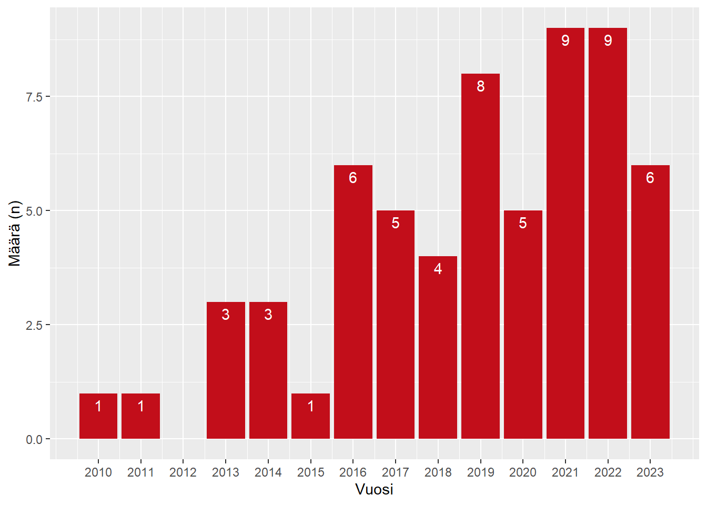
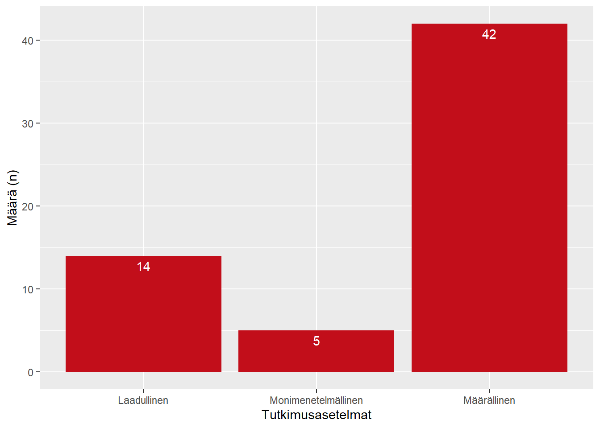
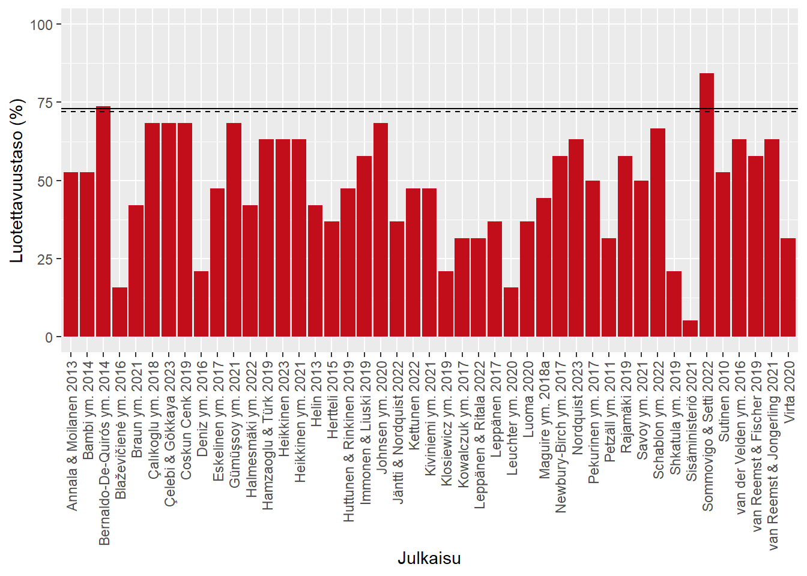
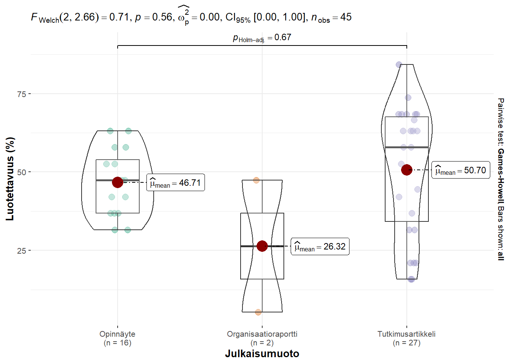
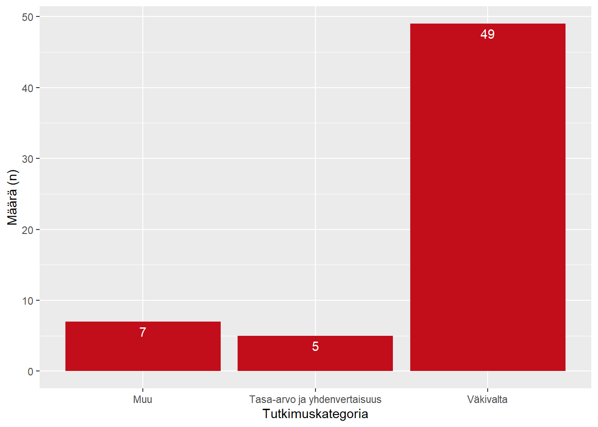
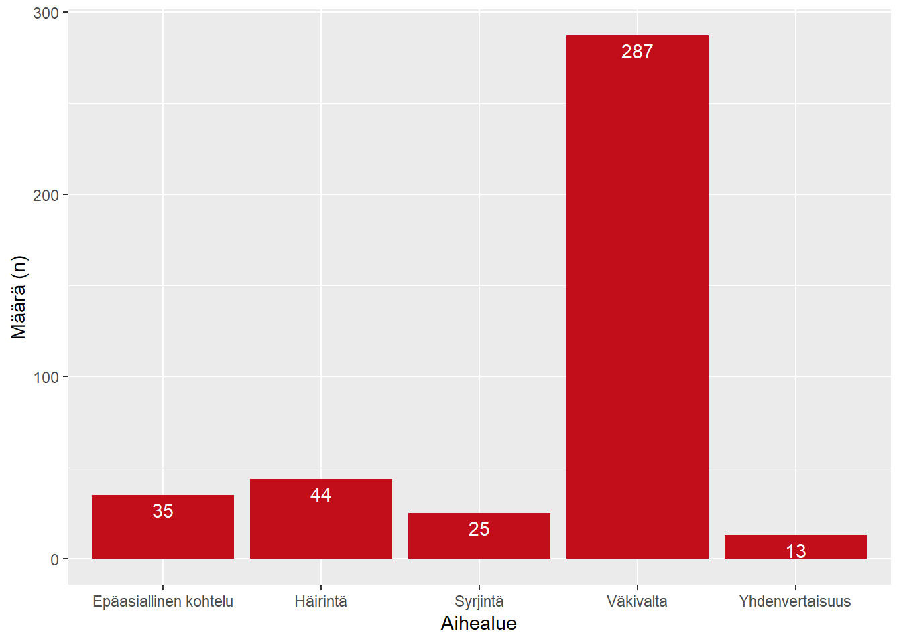
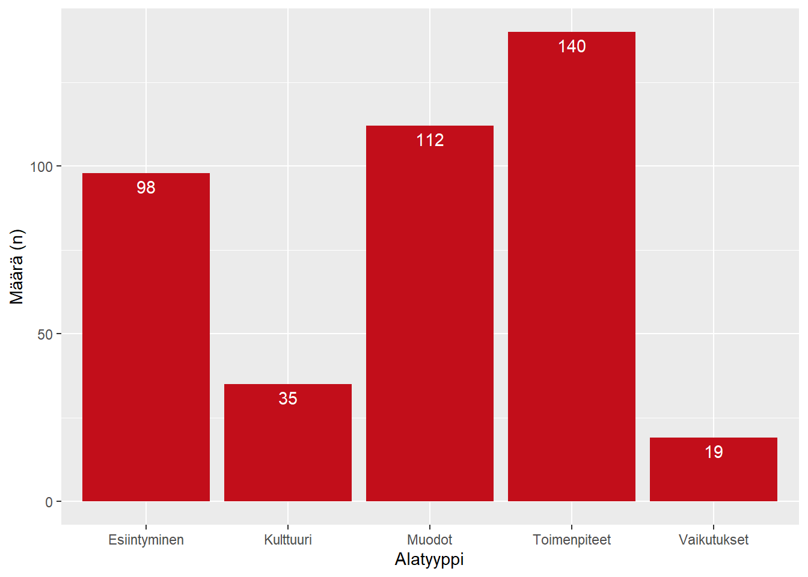
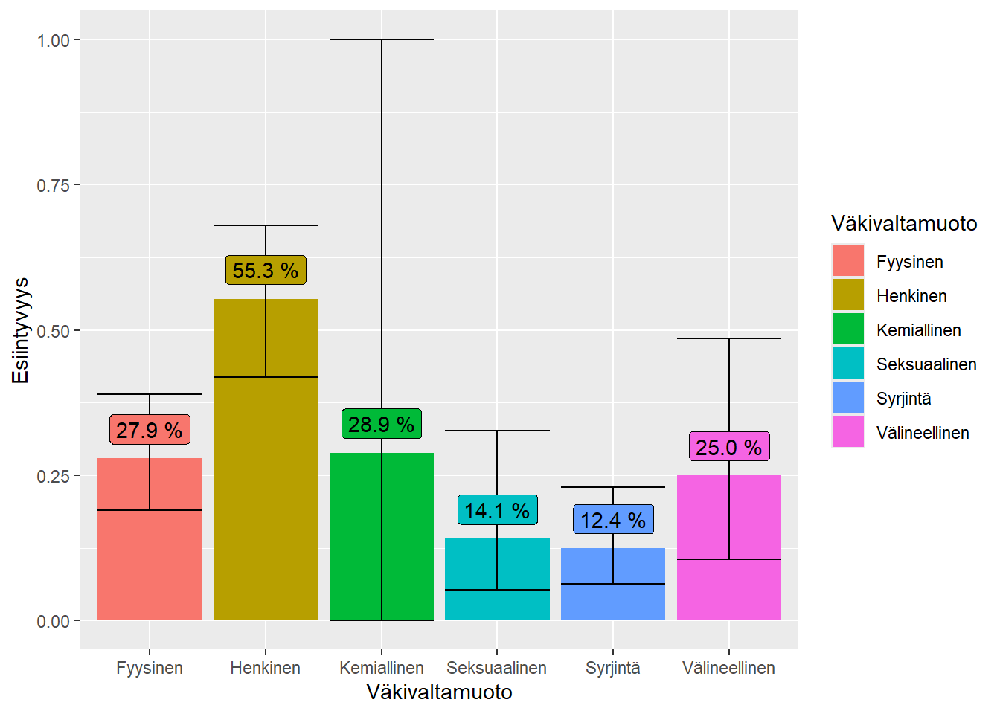

Koodi
# Avataan tarpeelliset kirjastot hiljaisesti
suppressPackageStartupMessages({
library(tidyverse)
library(ggstatsplot)
library(PRISMA2020)
library(metafor)
library(knitr) # Vain verkkosivun taulukon taittoon, voi jättää muuten pois
})Tämä osio sisältää hankkeen kirjallisuuskatsaukseen liittyvän tutkimusartikkelin dokumentoinnin ja toistotiedot. Artikkelin sisältö eroaa lievästi hankkeen kirjallisuuskatsauksesta aiheen vuoksi.
Otsikko: Pelastajien ja ensihoitajien kokema epäasiallinen ja väkivaltainen kohtelu - systemaattiseen kirjallisuuskatsaukseen pohjautuva käsiteanalyysi ja esiintyvyyden meta-analyysi
Julkaisutila: Julkaisematon
Kaikki koodiruudut ovat nähtävissä avaamalla koodin pudotusvalikon. Koodit voi myös asettaa näkyville valitsemalla “Show all code” yläoikealla olevassa pudotusvalikossa. Painamalla samasta pudotusvalikosta “Source code” näkyy koko dokumentin Markdown-lähde.
# Avataan tarpeelliset kirjastot hiljaisesti
suppressPackageStartupMessages({
library(tidyverse)
library(ggstatsplot)
library(PRISMA2020)
library(metafor)
library(knitr) # Vain verkkosivun taulukon taittoon, voi jättää muuten pois
})Kaikki tässä osiossa käytetty data on saatavilla verkkosivun GitHub-lähteessä. Alla on myös eritelty linkit jokaiselle datatiedostolle:
Kaikki data on UTF-8-mallisessa .csv-tiedostossa käyttäen puolipistettä erottimena.
### PRISMA-kulkukaavion tiedot
# Käytämme csv2-funktiota, koska Excel ei suostu exportoimaan csv-tiedostoa pilkkuerottimella puolipiste-erottimen sijaan, jostain syystä.
prisma <- read.csv2("data/artikkeli_PRISMAtiedot.csv") %>% PRISMA_data(.)
### Yleiskuvatiedot
data <- read.csv2("data/20240528_tulostenmetatiedot.csv") %>%
tibble() %>%
dplyr::filter(Haku %in% c(1:4, 6))
### Määrällisten kyselyjen laadunarviointitiedot
harhadata <- read.csv2("data/laadunarviointi_määrällisetkyselyt.csv") %>%
tibble() %>%
dplyr::filter(!Viite %in% c(
"Huotari 2019",
"Keskinen 2011",
"Koivunen ym. 2018",
"Leino ym. 2011a",
"Leino ym. 2011b",
"Leino ym. 2011c",
"Leino ym. 2011d",
"Paasonen & Vainio 2022"
))
### Käsitemääritelmätiedot
# Luetaan data ja korvataan tyhjät solut nollalla (käsittää vain numeraalit)
maaritelmadata <- read.csv2("data/artikkeli_määritelmät.csv") %>%
tibble() %>%
replace(is.na(.), 0) %>%
dplyr::filter(!Artikkeli %in% c(
"Huotari 2019",
"Keskinen 2011",
"Koivunen ym. 2018",
"Leino ym. 2011a",
"Leino ym. 2011b",
"Leino ym. 2011c",
"Leino ym. 2011d",
"Paasonen & Vainio 2022"
))
### Vakiintuneiden mittareiden tiedot
# Tämä tiedosto on varmennettu etukäteen, ettei sisällä viidennen haun tietoja.
mittarit_vakiintuneet <- read.csv2("data/artikkeli_mittarit_vakiintuneet.csv") %>%
tibble()
### Itsekehitettyjen mittareiden tiedot
# Poistetaan viidennen haun tiedot, jos niitä esiintyy.
mittarit_itsekehitetyt <- read.csv2("data/artikkeli_mittarit_itsekehitetyt.csv") %>%
tibble() %>%
dplyr::filter(!Viittaus %in% c(
"Huotari 2019",
"Keskinen 2011",
"Koivunen ym. 2018",
"Leino ym. 2011a",
"Leino ym. 2011b",
"Leino ym. 2011c",
"Leino ym. 2011d",
"Paasonen & Vainio 2022"
))
### Meta-analyysin tiedot
metadata <- read.csv2("data/metaanalyysidata.csv") %>%
dplyr::filter(!stringr::str_detect(väkivaltamuoto, ","))
metadata <- metadata %>%
tibble::rowid_to_column("ID")Koska käsikirjoitukseen ei sisälly viidettä hakua (muut turvallisuustoimijat), PRISMA-kaavio eroaa kirjallisuuskatsauksen yleisestä kaaviosta.
Artikkelin kaavio on tehty käsin diagrams.net-työkalun avulla (artikkelin Kuvio 1). Kaavioon liitetyt tiedot löytyvät alla olevassa kaaviossa.
PRISMA_flowdiagram(
prisma,
previous = FALSE,
other = TRUE,
detail_databases = FALSE,
fontsize = 11
)Yleiskuvan lukujen ja kuvioiden laatiminen seuraa kirjallisuuskatsauksen koko yleiskuvaa, mutta haku 5:n tulokset jätetään ulkopuolelle.
ggplot(data = data, mapping = aes(x = Vuosi)) +
geom_bar(stat = "count", fill = "#c20e1a") +
labs(y = "Määrä (n)") +
scale_x_continuous(breaks = seq(from = 2010, to = 2023)) +
geom_text(aes(label = ..count..), stat = "count", vjust = 1.5, colour = "white")
ggplot(data = data, mapping = aes(x = Tutkimusasetelma)) +
geom_bar(stat = "count", fill = "#c20e1a") +
labs(y = "Määrä (n)", x = "Tutkimusasetelmat") +
scale_x_discrete(breaks = unique(data$Tutkimusasetelma)) +
geom_text(aes(label = ..count..), stat = "count", vjust = 1.5, colour = "white")
ggplot(data = data, mapping = aes(x = Muoto)) +
geom_bar(stat = "count", fill = "#c20e1a") +
labs(y = "Määrä (n)", x = "Julkaisumuodot") +
scale_x_discrete(breaks = unique(data$Muoto)) +
geom_text(aes(label = ..count..), stat = "count", vjust = 1.5, colour = "white")
data %>% dplyr::filter(Toteutusmaa != "Suomi") %>%
ggplot(mapping = aes(x = Toteutusmaa, fill = Muoto)) +
geom_bar(stat = "count") +
labs(y = "Määrä (n)", x = "Toteutusmaat") +
scale_x_discrete(breaks = unique(data$Toteutusmaa), guide = guide_axis(angle = 45)) +
geom_text(aes(label = ..count..), stat = "count", vjust = -0.5, colour = "black", position = position_stack(vjust = 0.5))
Laadunarviointi seuraa samaa menetelmää kuin yleisen kirjallisuuskatsauksen tutkimusharhan riskiarviointi (ks. Luku 5).
harhadata %>%
ggplot(mapping = aes(x = Viite)) +
geom_col(aes(y = Score), fill = "#c20e1a") +
geom_hline(yintercept = 73) +
geom_hline(yintercept = 72, linetype = "dashed") +
labs(y = "Luotettavuustaso (%)", x = "Julkaisu") +
theme(axis.text.x = element_text(angle = 90, hjust = 1, vjust = 0.5)) +
ylim(0, 100)
harhadata_pivot <- harhadata %>%
tidyr::pivot_longer(Johdanto_1:Etiikka_3, names_to = "Osaalue")
ggplot(harhadata_pivot, aes(y = Osaalue, fill = value)) +
geom_bar(orientation = "y") +
geom_text(aes(label = ..count..), stat = "count", colour = "black", position = position_stack(vjust = 0.5))
ggbetweenstats(
harhadata,
x = Julkaisumuoto,
y = Score,
type = "parametric",
pairwise.display = "all",
bf.message = FALSE,
ylab = "Luotettavuus (%)"
)
maaritelmadata <- maaritelmadata %>%
mutate(
across(c(Antaa.määritelmän., Lakiviite, Tutkimusviite, Sanakirjaviite, Organisaatioviite), as.factor)
)Huomautamme, että datatiedostossa olevat X.-tunnisteet vastaavat koko kirjallisuuskatsauksen numerointia, ei tämän artikkelin numerointia, ja eroavat siten käsikirjoituksen liitetaulukossa annetuista tunnistenumeroista. Tutkimukset voi sen sijaan yhdistää liitetaulukon tietoihin Artikkeli-sarakkeen tietojen avulla.
ggplot(data = maaritelmadata, mapping = aes(x = Tutkimuskategoria)) +
geom_bar(stat = "count", fill = "#c20e1a") +
labs(y = "Määrä (n)", x = "Tutkimuskategoria") +
scale_x_discrete(breaks = unique(maaritelmadata$Tutkimuskategoria)) +
geom_text(aes(label = ..count..), stat = "count", vjust = 1.5, colour = "white")
Tutkimuksista 36 kappaletta antavat määritelmän analysoimalle käsitteelleen.
Määritelmien lähteinä on käytetty seuraavanlaisia lähteitä (arvojen tuottama koodi nähtävissä verkkosivun lähdekoodissa):
Lakiviite: 8 tutkimusta
Tutkimusviite: 19 tutkimusta
Sanakirjaviite: 2 tutkimusta
Organisaatioviite: 21 tutkimusta
maaritelmadata %>%
dplyr::filter(Tutkimuskategoria == "Väkivalta") %>%
ggplot(mapping = aes(x = Antaa.määritelmän.)) +
geom_bar(stat = "count", fill = "#c20e1a") +
labs(y = "Määrä (n)", x = "Antaa määritelmän") +
scale_x_discrete(breaks = unique(maaritelmadata$"Antaa.määritelmän.")) +
geom_text(aes(label = ..count..), stat = "count", vjust = 1.5, colour = "white")
Väkivaltatutkimusten aihealueet:
Fyysinen väkivalta: 40 tutkimusta
Henkinen väkivalta: 39 tutkimusta
Seksuaalinen väkivalta: 16 tutkimusta
Välineellinen väkivalta: 4 tutkimusta
Taloudellinen väkivalta: 2 tutkimusta
Lähisuhdeväkivalta: 1 tutkimusta
Etnisiin tai kulttuurillisiin vähemmistöihin kohdistuva väkivalta: 1 tutkimusta
Kunniaan liittyvä väkivalta: 0 tutkimusta
Mittareita tunnistettiin yhteensä 42 kappaletta.
ggplot(data = mittarit_vakiintuneet, mapping = aes(x = Aihealue)) +
geom_bar(stat = "count", fill = "#c20e1a") +
labs(y = "Määrä (n)", x = "Aihealue") +
scale_x_discrete(breaks = unique(mittarit_vakiintuneet$Aihealue)) +
geom_text(aes(label = ..count..), stat = "count", vjust = 1.5, colour = "white")
mittarit_vakiintuneet %>%
knitr::kable(., col.names = c("Aihealue", "Mittarin nimi", "Alkuperäinen lähde", "Viittaava lähde"))| Aihealue | Mittarin nimi | Alkuperäinen lähde | Viittaava lähde |
|---|---|---|---|
| Epäasiallinen kohtelu | Asiakkaan aggressio | Virtanen ym. 2011 | Pekurinen ym. 2017 |
| Epäasiallinen kohtelu | Attitudes towards Violence against Women Scale | Gömbül 2000 | Gümüşsoy ym. 2021 |
| Epäasiallinen kohtelu | Cuestionairo sobre Agresiones en el Medio Sanitario | Martínez-Jarreta ym. 2007 | Bernaldo-de-Quirós ym. 2015 |
| Epäasiallinen kohtelu | Lateral Hostility | Alspach 2008 | Bambi ym. 2014 |
| Epäasiallinen kohtelu | Prevention Strategies | Kessler ym. 2008 | van Reemst & Fischer 2019 |
| Epäasiallinen kohtelu | Risk for Violence Measure | LeBlanc & Kelloway 2002 | van Reemst & Jongerling 2021 |
| Epäasiallinen kohtelu | Staff Observation Aggression Scale – Revised Emergency | Morken ym. 2018 | Johnsen ym. 2020, Schablon ym. 2022 |
| Epäasiallinen kohtelu | Exposure to Workplace Aggression | Dupré ym. 2014 | van Reemst & Jongerling 2021 |
| Epäasiallinen kohtelu | Työpaikkaväkivallan kuusi eri kategoriaa | Boyle ym. 2007 | Jäntti & Nordquist 2022 |
| Epäasiallinen kohtelu | Victim Incivility Scale | Sliter & Boyd 2015 | Sommovigo & Setti 2022 |
| Epäasiallinen kohtelu | Violence and Aggression in the Health Services | Mullan & Badger 2007 | Shkatula ym. 2019 |
| Epäasiallinen kohtelu | Workplace Violence in the Health Sector Country Case Study Questionnaire | International Labour Office ym. 2003 | Hamzaoglu & Türk 2019, Maguire ym. 2018a, Maguire ym. 2018b |
| Organisaatiotoiminta | Health Staff’s Recognition of Signs of Violence against Women Scale | Gömbül 2000 (viite epävarma) | Gümüşsoy ym. 2021 |
| Organisaatiotoiminta | Henkilökohtainen tuki 1 | Senior & Swailes 2015 | Eskelinen ym. 2017 |
| Organisaatiotoiminta | Henkilökohtainen tuki 2 | Näswall ym. 2010 | Eskelinen ym. 2017 |
| Organisaatiotoiminta | Organisaatioluottamus | Champ 2007 | Eskelinen ym. 2017 |
| Organisaatiotoiminta | Organisaation tuki 1 | Eisenberger ym. 1986 | Eskelinen ym. 2017 |
| Organisaatiotoiminta | Organisaation tuki 2 | Hogan & Coote 2014 | Eskelinen ym. 2017 |
| Organisaatiotoiminta | Questionnaire on the Experience and Evaluation of Work | van Veldhoven ym. 1997 | van der Velden ym. 2016 |
| Organisaatiotoiminta | Sitoutuminen organisaatiotoimintaan | Saks 2006 | Eskelinen ym. 2017 |
| Organisaatiotoiminta | Tyytyväisyys organisaatiotoimintaan | Cammann ym. 1983 | Eskelinen ym. 2017 |
| Organisaatiotoiminta | Työntekijöiden muutosresilienssi | Näswall ym. 2015 | Eskelinen ym. 2017 |
| Organisaatiotoiminta | Vapaaehtoistyön jatkoaikeet | Pearce 1983 | Eskelinen ym. 2017 |
| Terveys | Acute Stress List | van der Velden & Herpers 1994 | van der Velden ym. 2016 |
| Terveys | Beck Anxiety Inventory | Beck ym. 1988 | Çelebi & Gökkaya 2023 |
| Terveys | Beck Depression Inventory | Beck ym. 2010 | Çelebi & Gökkaya 2023 (versiosta epävarmuutta) |
| Terveys | Copenhagen Burnout Inventory | Kristensen ym. 2005 | Schablon ym. 2022 |
| Terveys | Copenhagen Psychosocial Questionnaire | Kristensen & Borg 2003 | Schablon ym. 2022 |
| Terveys | Dutch UCL | Schreurs 1992 | van der Velden ym. 2016 |
| Terveys | EMS Critical Incident Stress | Donnelly & Bennett 2014 | Nordquist 2023 |
| Terveys | General Health Questionnaire | Goldberg 1978 | Pekurinen ym. 2017 (12-versio), Bernaldo-de-Quirós ym. 2015 (28-versio), Sommovigo & Setti (12-versio) |
| Terveys | Hamburg Burnout Inventory | Burisch 1984, Burisch 2017 | Braun ym. 2021 |
| Terveys | International Personality Item Pool | Goldberg 1999 | van der Velden ym. 2016 |
| Terveys | Jenkins Sleep Scale | Jenkins ym. 1988 | Pekurinen ym. 2017 |
| Terveys | Kuormituksesta palautuminen | Kinnunen & Mauno 2009 | Nordquist 2023 |
| Terveys | Maslach Burnout Inventory | Maslach & Jackson 1981 | Bernaldo-de-Quirós ym. 2015, Coskun Cenk 2019, Deniz ym. 2016, Sommovigo & Setti 2022 |
| Terveys | RAND-36 | Aaronson ym. 1998 | van der Velden ym. 2016 |
| Terveys | RS-13 Resilience Questionnaire | Leppert ym. 2008 | Schablon ym. 2022 |
| Terveys | Symptom Checklist 90-R | Derogatis 1977 | van der Velden ym. 2016 |
| Terveys | Terveyden itsearviointi | Idler ym. 2000 | Pekurinen ym. 2017 |
| Terveys | Työkykyindeksi (Work Ability Index) | Tuomi ym. 1997/2006 – Ilmarinen ym. 1997 | Nordquist 2023, Pekurinen ym. 2017, Schablon ym. 2022 |
| Terveys | WHO-Five Well-Being Index | Staehr Johansen 1998 (viite epävarma) | Schablon ym. 2022 |
ggplot(data = mittarit_itsekehitetyt, mapping = aes(x = Aihealue)) +
geom_bar(stat = "count", fill = "#c20e1a") +
labs(y = "Määrä (n)", x = "Aihealue") +
scale_x_discrete(breaks = unique(mittarit_itsekehitetyt$Aihealue)) +
geom_text(aes(label = ..count..), stat = "count", vjust = 1.5, colour = "white")
ggplot(data = mittarit_itsekehitetyt, mapping = aes(x = Alatyyppi)) +
geom_bar(stat = "count", fill = "#c20e1a") +
labs(y = "Määrä (n)", x = "Alatyyppi") +
scale_x_discrete(breaks = unique(mittarit_itsekehitetyt$Alatyyppi)) +
geom_text(aes(label = ..count..), stat = "count", vjust = 1.5, colour = "white")
ggplot(data = mittarit_itsekehitetyt, mapping = aes(x = Näkökulma)) +
geom_bar(stat = "count", fill = "#c20e1a") +
labs(y = "Määrä (n)", x = "Näkökulma") +
scale_x_discrete(breaks = unique(mittarit_itsekehitetyt$Näkökulma)) +
geom_text(aes(label = ..count..), stat = "count", vjust = 1.5, colour = "white")
Sisällytimme meta-analyysiin kirjallisuuskatsauksesta 33 tutkimusta, jotka täyttivät seuraavat kriteerit:
Seulosimme kaikki kriteerit täyttävät tutkimukset läpi ja keräsimme Excel-taulukkoon tutkimusten jokaisen estimaatin arvon sekä estimaatin otoskoko. Jos tutkimus raportoi sisäistä katoa, käytimme estimaattikohtaista otoskokoa; jos katoa ei raportoitu, käytimme tutkimuksen (tai sen relevanttien kohderyhmien) otoskokoa.
Luokittelimme kaikki estimaatit väkivaltaluokituksen mukaisesti (Bildjuschkin ym. 2019). Jätimme pois kaikki estimaatit, jotka käsittelivät “Muu”-luokkia.
Kuudelle estimaatille emme voineet antaa yksiselitteistä luokkaa. Jätimme nämä estimaatit analyysin ulkopuolelle:
Käytetty data on saatavilla tämän sivuston GitHub-lähdekoodista; datatiedoston saa tästä linkistä suoraan. Huomautamme, että datatiedostossa olevat nro-tunnisteet vastaavat koko kirjallisuuskatsauksen numerointia, ei tämän artikkelin numerointia, ja eroavat siten käsikirjoituksen liitetaulukossa annetuista tunnistenumeroista. Tutkimukset voi sen sijaan yhdistää liitetaulukon tietoihin artikkeli-sarakkeen tietojen avulla.
# Tehdään valmis tulostaulukko myöhemmäksi
tulokset <- tibble(
muoto = character(),
arvo = numeric(),
ci_ala = numeric(),
ci_ylä = numeric()
)Muunsimme ensin kaikki prosenttiluvut logit-luvuiksi ja laskimme niiden keskivirheet. Tämä muunnos tehdään, jotta voimme suorittaa monitasoisen meta-analyysin myöhemmin.
metadata <- metadata %>%
add_column(
pros_log = numeric(nrow(metadata)),
pros_sqrtse = numeric(nrow(metadata))
)
metadata <- metadata %>%
dplyr::select(ID, otoskoko, pros) %>%
dplyr::filter(pros != 0) %>%
dplyr::mutate(
pros_log = log(pros/(1-pros)),
pros_sqrtse = (1/(otoskoko*pros))+(1/(otoskoko*(1-pros)))
) %>%
dplyr::rows_update(
x = metadata,
y = .,
by = "ID",
copy = TRUE
)Asetimme sitten jokaiselle väkivaltamuodolle oman kolmitasoisen meta-analyyttisen mallin metafor-paketin avulla.
malli_fyysinen <- metafor::rma.mv(
yi = pros_log,
V = pros_sqrtse,
slab = artikkeli,
data = dplyr::filter(metadata, väkivaltamuoto == "Fyysinen"),
random = ~ 1 | artikkeli/ID,
test = "t",
method = "REML"
)
tulokset <- tulokset %>%
add_case(
muoto = "Fyysinen",
arvo = as.double(exp(malli_fyysinen$b) / (1 + exp(malli_fyysinen$b))),
ci_ala = as.double(exp(malli_fyysinen$ci.lb) / (1 + exp(malli_fyysinen$ci.lb))),
ci_ylä = as.double(exp(malli_fyysinen$ci.ub) / (1 + exp(malli_fyysinen$ci.ub)))
)malli_henkinen <- metafor::rma.mv(
yi = pros_log,
V = pros_sqrtse,
slab = artikkeli,
data = dplyr::filter(metadata, väkivaltamuoto == "Henkinen"),
random = ~ 1 | artikkeli/ID,
test = "t",
method = "REML"
)
tulokset <- tulokset %>%
add_case(
muoto = "Henkinen",
arvo = as.double(exp(malli_henkinen$b) / (1 + exp(malli_henkinen$b))),
ci_ala = as.double(exp(malli_henkinen$ci.lb) / (1 + exp(malli_henkinen$ci.lb))),
ci_ylä = as.double(exp(malli_henkinen$ci.ub) / (1 + exp(malli_henkinen$ci.ub)))
)malli_seksuaalinen <- metafor::rma.mv(
yi = pros_log,
V = pros_sqrtse,
slab = artikkeli,
data = dplyr::filter(metadata, väkivaltamuoto == "Seksuaalinen"),
random = ~ 1 | artikkeli/ID,
test = "t",
method = "REML"
)
tulokset <- tulokset %>%
add_case(
muoto = "Seksuaalinen",
arvo = as.double(exp(malli_seksuaalinen$b) / (1 + exp(malli_seksuaalinen$b))),
ci_ala = as.double(exp(malli_seksuaalinen$ci.lb) / (1 + exp(malli_seksuaalinen$ci.lb))),
ci_ylä = as.double(exp(malli_seksuaalinen$ci.ub) / (1 + exp(malli_seksuaalinen$ci.ub)))
)malli_välineellinen <- metafor::rma.mv(
yi = pros_log,
V = pros_sqrtse,
slab = artikkeli,
data = dplyr::filter(metadata, väkivaltamuoto == "Välineellinen"),
random = ~ 1 | artikkeli/ID,
test = "t",
method = "REML"
)
tulokset <- tulokset %>%
add_case(
muoto = "Välineellinen",
arvo = as.double(exp(malli_välineellinen$b) / (1 + exp(malli_välineellinen$b))),
ci_ala = as.double(exp(malli_välineellinen$ci.lb) / (1 + exp(malli_välineellinen$ci.lb))),
ci_ylä = as.double(exp(malli_välineellinen$ci.ub) / (1 + exp(malli_välineellinen$ci.ub)))
)malli_kemiallinen <- metafor::rma.mv(
yi = pros_log,
V = pros_sqrtse,
slab = artikkeli,
data = dplyr::filter(metadata, väkivaltamuoto == "Kemiallinen"),
random = ~ 1 | artikkeli/ID,
test = "t",
method = "REML"
)
tulokset <- tulokset %>%
add_case(
muoto = "Kemiallinen",
arvo = as.double(exp(malli_kemiallinen$b) / (1 + exp(malli_kemiallinen$b))),
ci_ala = as.double(exp(malli_kemiallinen$ci.lb) / (1 + exp(malli_kemiallinen$ci.lb))),
ci_ylä = as.double(exp(malli_kemiallinen$ci.ub) / (1 + exp(malli_kemiallinen$ci.ub)))
)malli_syrjintä <- metafor::rma.mv(
yi = pros_log,
V = pros_sqrtse,
slab = artikkeli,
data = dplyr::filter(metadata, väkivaltamuoto == "Syrjintä"),
random = ~ 1 | artikkeli/ID,
test = "t",
method = "REML"
)
tulokset <- tulokset %>%
add_case(
muoto = "Syrjintä",
arvo = as.double(exp(malli_syrjintä$b) / (1 + exp(malli_syrjintä$b))),
ci_ala = as.double(exp(malli_syrjintä$ci.lb) / (1 + exp(malli_syrjintä$ci.lb))),
ci_ylä = as.double(exp(malli_syrjintä$ci.ub) / (1 + exp(malli_syrjintä$ci.ub)))
)Tulokset ovat esitettynä alla olevassa taulukossa (Taulukko 6.2) ja kuviossa (Kuva 6.15). Kuvio vastaa käsikirjoituksen Kuvio 4:ää. Taulukon lukuja käytetään juoksevassa tekstissä.
knitr::kable(tulokset)| muoto | arvo | ci_ala | ci_ylä |
|---|---|---|---|
| Fyysinen | 0.2789465 | 0.1895949 | 0.3901356 |
| Henkinen | 0.5533997 | 0.4192201 | 0.6802255 |
| Seksuaalinen | 0.1407950 | 0.0525257 | 0.3263131 |
| Välineellinen | 0.2498108 | 0.1050369 | 0.4858107 |
| Kemiallinen | 0.2885580 | 0.0000040 | 0.9999758 |
| Syrjintä | 0.1242874 | 0.0633724 | 0.2294136 |
ggplot(tulokset) +
aes(x = muoto, y = arvo, fill = muoto) +
geom_col() +
geom_errorbar(aes(ymin = ci_ala, ymax = ci_ylä)) +
labs(
x = "Väkivaltamuoto",
y = "Esiintyvyys",
fill = "Väkivaltamuoto"
)